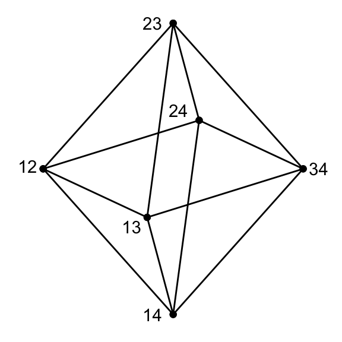

Chapter 7 The Johnson Graph \(J(D,N)\)
Wednesday, February 3, 1993
Definition 7.1 The Johnson graph, \(\Gamma = J(D,N)\) \((1\leq D\leq N-1)\) satisfies \[\begin{align} X & = \{S\mid S\subset \Omega, \; |S| = D\} \quad\text{where }\; \Omega = \{1, 2, \ldots, N\}\\ E & = \{ST\mid S, T\in X, \quad |S\cap T| = D-1\}. \end{align}\]
Example 7.1 \(J(2,4)\) 
Note 1. The symmetric group \(S_N\) acts on \(\Omega\). \(S_N \subseteq \mathrm{Aut}(\Gamma)\) acts vertex transitively on \(\Gamma\).
Note 2. \(\Gamma = J(D,N)\) is isomorphic to \(\Gamma' = J(N-D,N)\). \[\begin{align} \Gamma = (X, E) & \qquad \longrightarrow & \Gamma' = (X', E')\\ X\ni S & \qquad \longmapsto & \bar{S} = \Omega\setminus S \in X' \end{align}\] This correspondence induces an isomorphism of graphs.
Pf. \[\begin{align} ST\in E & \Leftrightarrow |S\cap T| = D-1\\ & \Leftrightarrow |\Omega - (S\cup T)| = N-D-1\\ & \Leftrightarrow |\bar{S} \cap \bar{T}| = N-D-1\\ & \Leftrightarrow \bar{S}\bar{T} \in E' \end{align}\]
Hence, without loss of generality, assume \[D\leq N/2 \quad \text{for} \quad J(D,N).\]
We sill need the eigenvalues of \(J(D,N)\) for certain problem later in the course. We can get these eigenvalues from our study of \(H(D,2)\).
Lemma 7.1 The eigenvalues for \(J(D,N)\) with \(1\leq D \leq N/2\) are give by \[\begin{align} \theta_i & = (N-D-i)(D-i) - i \quad (0\leq i\leq D),\\ m_i & = \binom{N}{i} - \binom{N}{i-1}. \end{align}\]
Proof. Let \[\begin{align} \Gamma_J & \equiv J(D,N) = (X_J, E_J)\\ \Gamma_H & \equiv H(N,2) = (X_H, E_H). \end{align}\] Set \(x \equiv 11\cdots 1 \in X_H\).
Define \(\tilde{\Gamma} \equiv (\tilde{X}, \tilde{E})\), where \[\begin{align} \tilde{X} & = \{y\in X_H \mid \partial_H(x,y) = D\} \quad \partial_H:\text{distance in }\Gamma_H\\ \tilde{E} & = \{yz\in X_H \mid \partial_H(y,z) = 2\}. \end{align}\] Observe \[\begin{align} X_J & \quad \to & \tilde{X}\\ S & \quad \mapsto & \hat{S}, \end{align}\] where \[\hat{S} = a_1\cdots a_N, \quad a_i = \begin{cases} -1 & \text{if }i\in S\\ 1 & \text{if }i\not\in S \end{cases}\] induces an isomorphism of graphs \(\Gamma_J \to \tilde{\Gamma}\).
Pf. \[\begin{align} ST \in E_J &\Leftrightarrow |S\cap T| = D-1\\ & \Leftrightarrow \partial_H(\hat{S}, \hat{T}) = 2\\ & \Leftrightarrow (\hat{S}, \hat{T})\in \tilde{E}. \end{align}\]
Identify, \(\Gamma_J\) with \(\tilde{\Gamma}\). Then the standard module \(V_J\) of \(\Gamma_J\) becomes \(\tilde{V} = E^*_DV_H\), where \(V_H\) is the standard module of \(\Gamma_H\), and \(E^*_D \equiv E^*_D(x)\).
Let \(R\) be the raising matrix with respect to \(x\) in \(\Gamma_H\), and
let \(L\) be the lowering matrix with respect to \(x\) in \(\Gamma_H\).
Recall \[(RL - DE^*_D) |_{\tilde{V}}\] is the adjacency map in \(\tilde{\Gamma}\).
To find eigenvalues of \(\tilde{A}\), pick any irreducible \(T(x)\)-module \(W\) with the endpoint \(r\leq D\). Then by Theorem 5.1 \[\text{diam}(W) = N-2r.\] Let \(w_0, w_1, \ldots, w_{N-2r}\) denote a basis for \(W\) as in Theorem 5.1. Then, \[w_{D-r} \in E^*_DW \subseteq \tilde{V}.\]
Observe: \[\begin{align} \tilde{A}w_{D-r} & = RLw_{D-r} - DE_D^*w_{D-r}\\ & = R(N-2r-D+r+1)w_{D-r-1} - Dw_{D-r}\\ & = ((N-D-r+1)(D-r) - D)w_{D-r}. \end{align}\] Note that this is valid for \(D = r\) as well.
Hence, \[\tilde{A}w_{D-r} = ((N-D-r)(D-r)-r)w_{D-r}.\] Let \[V_H = \sum W \quad (\text{direct sum of irreducible }T(x)\text{-modules}.)\] Then, \[\begin{align} V_J & = E_D^*V_H\\ & = \sum_{W:r(W)\leq D} E_D^*W\\ & = \text{a direct sum of 1 dimensional eigenspaces for }\tilde{A}. \end{align}\] The eigenspace for eigenvalue \[(N-D-r)(D-r)-r \quad (\text{monotonously decreasing with respec to }r)\] appears with multiplicity \[\binom{N}{r} - \binom{N}{r-1}\] in this sum by Theorem 5.1 \((iv)\).
Theorem 7.1 Let \(\Gamma = (X, E)\) be any graph. For a fixed vertex \(x\in X\), let \[E_i^*\equiv E_i^*(x), \quad T\equiv T(x), \quad D \equiv D(x), \text{ and } K = \mathbb{C}.\] Then we have the following implications of conditions: \[\text{TH} \Leftrightarrow \text{C} \Leftarrow \text{S} \Leftarrow \text{G},\] where
\[gx = x, \; gy = z, \; gz = y.\]
Proof.
Fix \(i\) with \(0\leq i\leq D\). Let \[V = \sum W. \; \text{The standard module written as a direct sum of irreducible $T$-modules}.\] Then, \[E_i^*V = \sum E_i^*W. \; \text{The direct sum of 1-dimensional $E_i^*TE_i^*$-modules}.\] Since \(\dim E_i^*W = 1\), for \(a, b\in E_i^*TE_i^*\), \({ab - ba}_{| E_i^*W} = 0\). Hence \(ab - ba = 0\).
Suppose \(\dim E_i^*W \geq 2\) for some irreducible \(T\)-module \(W\) with some \(i\) with \(1\leq i\leq D\).
Claim 1. \(E_i^*W\) is an irreducible \(E_i^*TE_i^*\)-module.
Proof of Claim 1. Suppose \[0 \subsetneq U \subsetneq E_i^*W,\] where \(U\) is an \(E_i^*TE_i^*\)-module. Then by the irreducibility, \[TU = W.\] So, \[U \supseteq E_i^*TE_i^*U = E_i^*TU = E^*_iW.\] This is a contradiction.
Claim 2. Each irreducible \(S = E_i^*TE_i^*\)-module \(U\) has dimension \(1\). In particular, \(\Gamma\) is thin with respect to \(x\).
Proof of Claim 2. Pick \[0\neq a \in E_i^*TE_i^*.\] Since \(\mathbb{C}\) is algebraicallt closed, \(a\) has an eigenvector \(w\in U\) with eigenvalue \(\theta\). Then, \[\begin{align} (a- \theta I)U & = (a-\theta I)Sw\\ & = S(a-\theta I)w\\ & = 0. \end{align}\] Hence, \[a_{|U} = \theta I_{|U} \quad \text{for all }\; a\in S.\] Thus each \(1\) dimensional subspace of \(U\) is an \(S\)-module. We have \[\dim U = 1.\] By Claim 1 and Claim 2, we have (TH).
HS MEMO
Claim 1 shows the following: If \(W\) is an irreducible \(T\)-module, then \(E^*_iW\) is either \(0\) or an irreducible \(E^*_iTE^*_i\)-module.